歐耶！這週末又帶著摩卡卡出去溜達溜達嘍！
謝謝墨墨麻＆卡內麻的相約，這次去了個好地方呢！ 
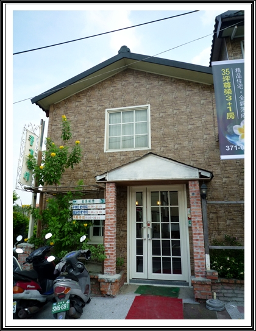
地點不遠在桃園而已！
外觀是間鄉村風格的紅磚屋，感覺是間小小的店應該不大！
但進去後就大驚喜，原來裡面不小耶！走愈深愈發現它還蠻大的！
今天聚會的成員有：

本格格主～小眼睛柯基摩卡卡同學

古靈精怪副會長~卡ㄋㄟ少爺
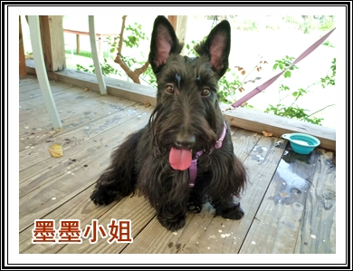
可愛的蘇格蘭梗~墨墨小姐
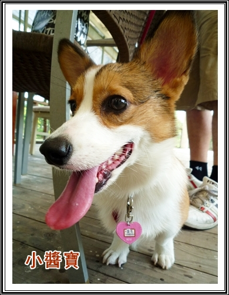
美貌與帥氣兼具的醬寶小捧油！
除了摩卡卡的麻吉卡ㄋㄟ之外，其他同學都是第一次見面歐！
真開心又認識新朋友，小捧油們果然沒在怕生的！一下下就high起來了

這片乾淨又大的草地真的是太棒了！完全不用擔心小孩會亂跑！

讓他們在草地暖暖身之後，就先上岸補充水份
大家都好乖，排排站輪流喝水沒有吵架！
話說自從摩卡卡跟著副會長多次在酒店特訓後，有變得比較不會護食說
以前偶爾都會皺鼻頭兇兇！現在吃小點心喝水都很ｏｋ了！
多虧了卡內麻的幫忙啊！

跟墨墨小姐合照片一張，墨墨的坐姿很可愛歐！
後腳會開開的，也是腿短短的一族！
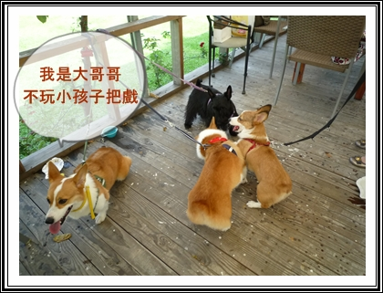
上岸沒多久，小醬寶就跟摩卡卡開戰啦！
因為也只有摩卡卡這幼稚鬼有興趣，卡ㄋㄟ跟墨墨只想一旁觀戰！
完全不想加入他們的行列！

話說小醬寶這幼幼的體力真不是蓋的，飛上飛下的！
把摩卡卡玩弄於股掌之間！

雖然大部分的都是被醬寶海扁的份，
但摩卡卡絕對不是"肉腳 "啦！是我們不欺負弱小的好不好！

而且～～鄉親啊！
請睜大您的雙眼，左下角那張可是摩卡卡佔上風歐！
哈哈哈～唯一一張左勾拳我一定要大大的強調一下！
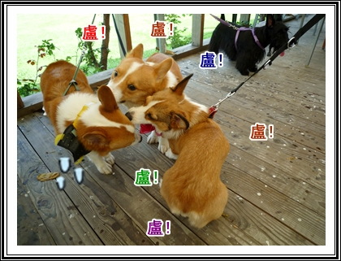
而且醬寶跟卡卡的共同點就是又盧又白目
副會長都說不想玩了，倆個人還不停的盧他戳他

害得少爺氣的哇哇叫，結果被他老木戴上套套
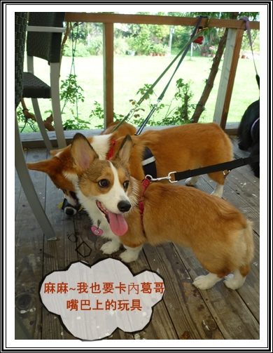
小醬寶可能沒看過這新玩意兒，好奇的叫麻麻買一個給他
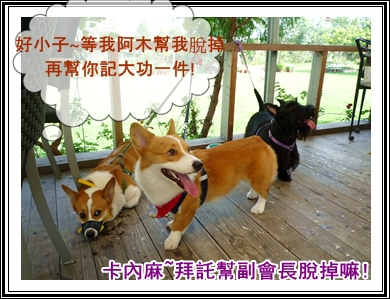
但摩卡卡就知道"代誌"大條了，因為他的白目害副會長受罰
趕緊跟卡內麻求饒放了少爺一馬吧！
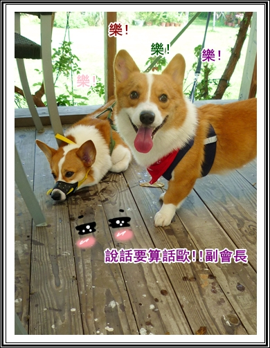
副會長也答應了要幫二等兵記大功一件，不能騙人歐！
記得跟阿寶會長說一下，下個月升一等兵？
當天天氣非常好，草地又非常的乾淨
一下午我們幾乎都待在草地上玩耍，還一起表演了拜託拜託

有影片可以看歐！
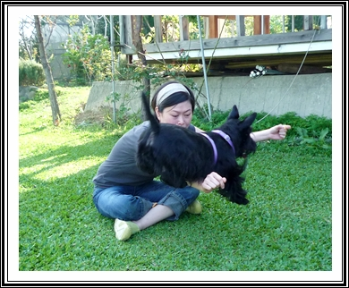
墨墨同學也show了草上飛的才藝!很厲害吧!
墨墨麻手或腳舉起來他就可以飛了～～
聚會一定要來一下全體合照的嘛！但超過兩隻狗難度就變好高啊！ 

麻麻們各自努力控制小孩不要亂動，
瞧瞧卡ㄋㄟ的眼睛，緊緊盯著他娘手上的零食，太好笑了！哈哈
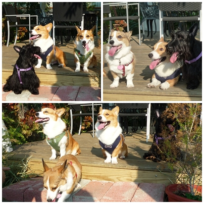
要４犬合照還是好難，永遠都少一隻！

但這張這張最大的重點就是摩卡卡綠豆眼大勝卡ㄋㄟ啦！

這張也沒輸歐！哈哈！謝謝太陽公公幫了個大忙
原來眼睛大的人比較怕光啦！太妙了 
有機會再找媽寶會長實驗一下好惹！

終於合體完成，但隊形一整個就很隨意！有直的有橫的
根本只要湊在一起就好了嘛！
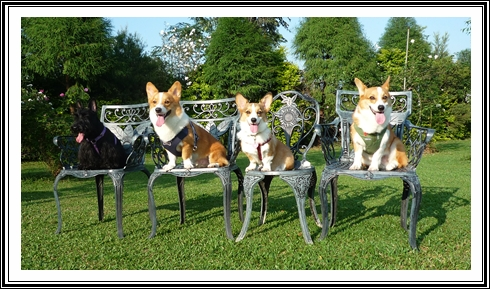
為了留下完美的ENDING，又把小捧油們放到椅子上乖乖安份的拍一張合照
但小墨墨不見了啦！只看到粉嫩小舌頭
不知是不是我的小DC關係，應該在卡內家照片會比較清楚啦！

最後獻出小醬寶"登大人"的美照，史上最幼齒的女僕
媽媽桑～你招兵買馬的口味愈來愈重 了歐！